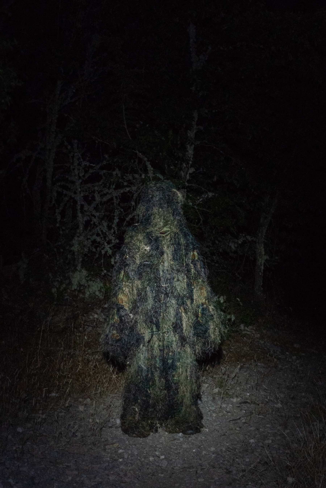
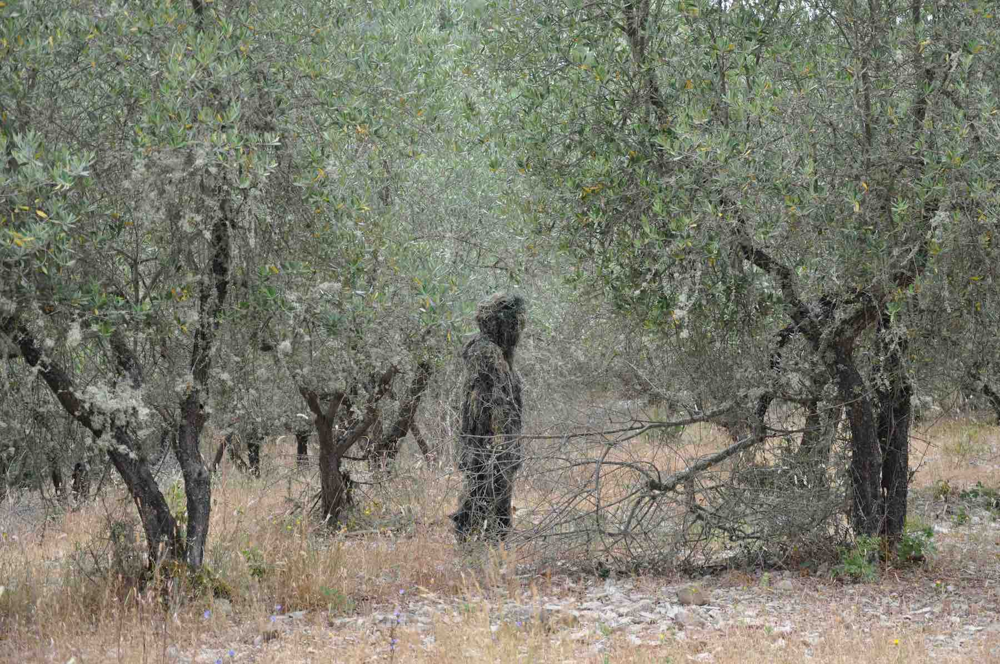

2021
Possibility of an Island
Short film (9'00")
Project by: Alessandro Celli, Martina Marchesi, Luca Monaco, Fosbury Architecture
The Last Human on Earth is a short film that stages the final hours of the last of our species.
Avoiding any apocalyptic visual temptation, the storyline dissects a relatively short timeframe in which the protagonist abandons
civilization and dives into a natural environment establishing a conflicting relationship with other species: a means to
challenge anthropocentrism, to question the relationship between human and artificial intelligence, and to imagine which
natural species could be next dominant on a global scale.
The Last Human on Earth was developed and produced at ↗ Possibility of an Island, a summer school in Tuscany organized by
Space Caviar, (ab)Normal, CAPTCHA, and the AA School of Architecture. The team was composed by Martina Marchesi, Luca Monaco, Alessandro Celli,
and supervised by Claudia and Giacomo from ↗ Fosbury Architecture.
You can read more here: ↗ i-D (Italian), ↗ Spazio Maiocchi (English).
↑ Photo by Piercarlo Quecchia – DSL Studio
↑ Photo by Piercarlo Quecchia – DSL Studio
© Alessandro Celli